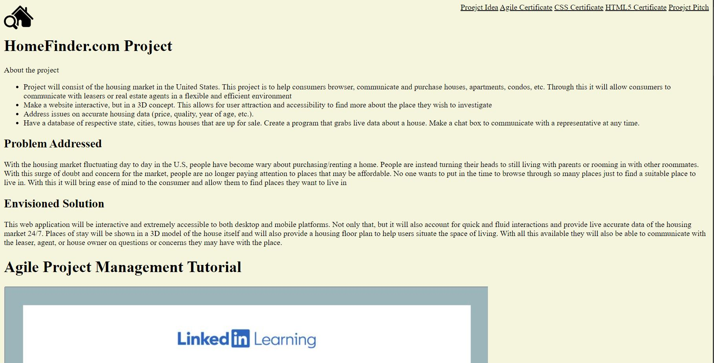
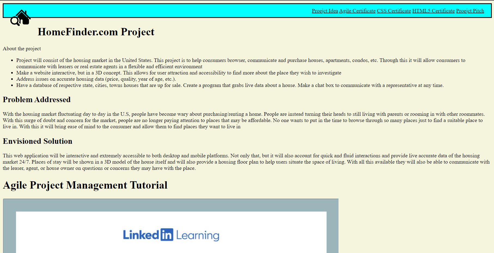

HomeFinder.com Project
About the project
- Project will consist of the housing market in the United States. This project is to help consumers browser, communicate and purchase houses, apartments, condos, etc. Through this it will allow consumers to communicate with leasers or real estate agents in a flexible and efficient environment
- Make a website interactive, but in a 3D concept. This allows for user attraction and accessibility to find more about the place they wish to investigate
- Address issues on accurate housing data (price, quality, year of age, etc.).
- Have a database of respective state, cities, towns houses that are up for sale. Create a program that grabs live data about a house. Make a chat box to communicate with a representative at any time.
Problem Addressed
With the housing market fluctuating day to day in the U.S, people have become wary about purchasing/renting a home. People are instead turning their heads to still living with parents or rooming in with other roommates. With this surge of doubt and concern for the market, people are no longer paying attention to places that may be affordable. No one wants to put in the time to browse through so many places just to find a suitable place to live in. With this it will bring ease of mind to the consumer and allow them to find places they want to live in
Envisioned Solution
This web application will be interactive and extremely accessible to both desktop and mobile platforms. Not only that, but it will also account for quick and fluid interactions and provide live accurate data of the housing market 24/7. Places of stay will be shown in a 3D model of the house itself and will also provide a housing floor plan to help users situate the space of living. With all this available they will also be able to communicate with the leaser, agent, or house owner on questions or concerns they may have with the place.
Agile Project Management Tutorial
Introduction to CSS Tutorial

HTML 5 & Website Design Exercise
 Pitch for Project Idea
Problem to solve
- With the housing market fluctuating day to day in the U.S, people have become wary about purchasing/renting a home. People are instead turning their heads to still living with parents or rooming in with other roommates. With this surge of doubt and concern for the market, people are no longer paying attention to places that may be affordable. No one wants to put in the time to browse through so many places just to find a suitable place to live in. With this it will bring ease of mind to the consumer and allow them to find places they want to live in.
Solution proposed
- This web application will be interactive and extremely accessible to both desktop and mobile platforms. Not only that, but it will also account for quick and fluid interactions and provide live accurate data of the housing market 24/7. Places of stay will be shown in a 3D model of the house itself and will also provide a housing floor plan to help users situate the space of living. With all this available they will also be able to communicate with the leaser, agent, or house owner on questions or concerns they may have with the place.
Value proposition
- Sit back and relax while stressing on finding a place to live in, we will help find what you are looking for in a place such as price, environment, and condition! We will provide you with everything you wish to seek and view in a place.
Potential market size
- Potential market size
Value proposition
-
Who they are?
-
Zillow:
- They have a comprehensive database of homes and apartments for both sale and rent. Have accurate property values according to the housing market value. They also have interactive widgets to allow consumers to have in depth accessibility to view the home. They also have a app and responsive website that also displays information about the area according to the home that is up for sale.
- What solution do they have?
- The competitors have a wide range of accessibility applications within their website for consumers to use and browse their future home of stay. These programs range from a good comprehensive database of homes and apartments to rent. They also have responsive and interactive widgets on the page such as 3D touring, market data trends, and area information.
-
How is your solution different and better:
- My solution would provide interactive 3D models of properties and detailed interior floor plans. With this, it would stray away from the typical 2D floor plan and would allow for more detailed and interactive widgets for consumers to seek out what they will have in their home. 2D floor plan won’t be scrapped but will also be added as accommodation to allow those who want a simpler and more straightforward view on the place of stay. The application offers live, accurate market data 24/7 as well. You must collect and interpret real data.